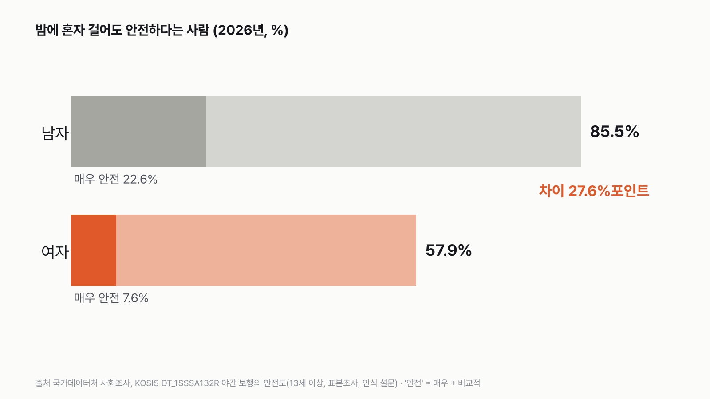
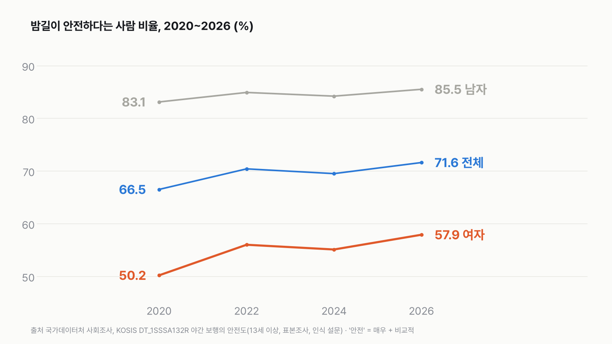

밤길이 안전하다는 사람, 남자 10명 중 8~9명·여자 6명
친구 10명에게 물으면, 밤길이 안전하다는 사람은 남자 친구 8~9명, 여자 친구 6명이에요.

3줄 요약
- 2026년 사회조사에서 밤에 혼자 걸어도 안전하다는 사람은 71.6%예요. 2024년 69.5%보다 2.1%포인트 많아요.
- 남자는 85.5%, 여자는 57.9%예요. 27.6%포인트 차이 나요.
- 여자는 2020년 50.2%에서 2026년 57.9%로 늘었어요. 그래도 남자와 차이는 여전히 커요.
| 밤길이 안전하다 | 2024년 | 2026년 | 2년 새 |
|---|---|---|---|
| 전체(13세 이상) | 69.5% | 71.6% | +2.1%포인트 |
| 남자 | 84.2% | 85.5% | +1.3%포인트 |
| 여자 | 55.1% | 57.9% | +2.8%포인트 |
남자 8~9명, 여자 6명
친구 10명으로 바꾸면 남자는 8~9명(85.5%), 여자는 6명(57.9%)이 밤길이 안전하다고 해요. 2년 전 여자는 5~6명(55.1%)이었어요.
'매우 안전'은 3배 차이
'매우 안전하다'만 보면 남자 22.6%, 여자 7.6%예요. 3배 차이예요. 여자 100명 중 8명만 밤길이 '매우' 안전하다고 했어요.
나이보다 성별 차이가 커요
2026년 나이대별로는 20대 71.6%, 30대 72.2%, 40대 73.8%, 50대 72.6%, 60세 이상 70.3%예요. 가장 높은 나이대와 가장 낮은 나이대의 차이는 3.5%포인트예요.
남녀 차이(27.6%포인트)는 그보다 8배 커요.

6년 새 흐름
| 해 | 전체 | 남자 | 여자 |
|---|---|---|---|
| 2020 | 66.5% | 83.1% | 50.2% |
| 2022 | 70.4% | 84.9% | 56.0% |
| 2024 | 69.5% | 84.2% | 55.1% |
| 2026 | 71.6% | 85.5% | 57.9% |
2022년에서 2024년 사이엔 조금 내려갔다가 2026년에 다시 올랐어요. 남녀 차이는 2020년 32.9%포인트에서 2026년 27.6%포인트로 줄었어요.
숫자를 다시 보며
이 숫자는 범죄율이 아니라 '안전하다고 느끼는 마음'이에요. 같은 동네를 걸어도 사람마다 다르게 느낄 수 있어요. 왜 남녀가 다르게 느끼는지는 이 조사로 알 수 없어요. 여러분은 밤길이 안전하다고 느끼나요?
이 숫자는 어디서 왔나요
출처
기준일 2026년 사회조사(2026년 11월 18일 공표) 값이에요. 같은 날 받았어요.
| 데이터 | 출처 | 쓰임 |
|---|---|---|
| 사회조사 2020~2026 야간 보행의 안전도 | 국가데이터처, KOSIS DT_1SSSA132R | 전체·남녀·나이대 '안전' 비율 |
어떻게 셌나요
- 자료: 국가데이터처 사회조사, KOSIS DT_1SSSA132R '야간 보행의 안전도'. 13세 이상이 답했어요. 사회조사 안전 부문은 2년마다 물어요.
- '안전하다': '매우 안전' + '비교적 안전'. 두 값을 더한 건 우리 계산이에요.
- 2020년부터만: 2018년까지는 문항이 다른 표라 잇지 않았어요.
- 10명 중 몇 명: 비율 ÷ 10을 반올림했어요. 85.5%는 8.6명이라 '8~9명', 55.1%는 5.5명이라 '5~6명'으로 적었어요.
한계 4가지
이 데이터로 말할 수 없는 것
- 인식 설문이에요. 실제 범죄 건수나 범죄율과는 다른 숫자예요.
- 표본조사라 오차가 있어요. 2년 새 차이가 작을수록 조사 오차일 수 있어요.
- 사는 곳(도시·시골), 밤에 실제로 얼마나 걷는지는 나누지 않았어요.
- 남녀가 왜 다르게 느끼는지는 이 자료로 알 수 없어요.
새 글 나오면 받아 보기
피드 리더 앱에 이 사이트 주소를 한 번 넣어 두면, 새 글이 올라올 때 앱에 떠요. 가입이나 메일 주소는 필요 없어요.
받는 법 보기
- 피드 리더 앱을 하나 골라요. 새 글을 모아 보여 주는 앱이에요. 예를 들면 Feedly나 Inoreader가 있어요. 둘 다 무료고 웹·휴대폰에서 써요.
- 앱에서 '구독 추가'(+)를 누르고 아래 주소를 붙여 넣어요.
- 끝이에요. 새 글이 올라오면 앱 목록에 떠요.
https://protofu.github.io/opendata-insight/feed.xmlFeedly를 쓴다면 여기를 눌러 바로 추가할 수도 있어요.